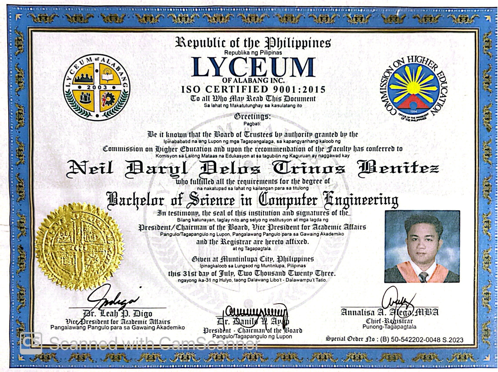

Education
College Degree

Bachelor of Science in Computer Engineering
Lyceum of Alabang
Graduated: July 31, 2023Senior High School Diploma - ICT Strand

I am Neil Daryl D. Benitez, a Computer Engineering graduate from Lyceum of Alabang (Class of 2023, Best in OJT). My IT journey began in senior high school under the Information and Communication Technology (ICT) strand, where I gained strong foundations in computer systems, electronics, and networking. I also earned certifications including National Certificate Level II in Computer Systems Servicing (NC II) and International Certification Level I in Information and Communication Technology (ICT).
As an IT Support Intern during my OJT at The Seashore Beach Club, Inc., I worked on website development, CCTV installation, and networking including LAN, Wi-Fi, and fiber-optic setup. Later, I became a ATM Field Service Engineer at One Point Contact Inc., where I independently handled onsite and offsite ATM servicing and preventive maintenance for major banks such as BDO, Metrobank, PSBank, EastWest Bank, PNB, PBCOM, and 7-Eleven.
Now, I bring my combined background in IT support, hardware servicing, preventive maintenance, and networking to ensure efficient and reliable IT operations.
Download Resume
IT Support & Field Service
Basic Networking (LAN/Wi-Fi, Cisco Packet Tracer)
Computer Hardware & Software Troubleshooting and Repair
ATM Hardware & Software Troubleshooting, Repair and Preventive Maintenance
Programming: HTML, CSS, PHP, JS, Java, C++